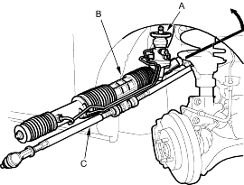
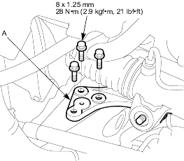
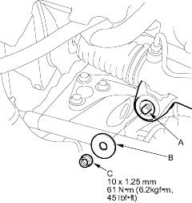
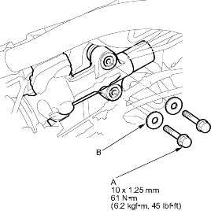

- Install the pinion shaft grommet (A).

- Pass the valve body unit side of the steering gearbox (B) together with the tie-rods (C) through the wheel well opening on the passenger's side.
- Carefully move the steering gearbox toward the driver's side until the pinion shaft clears the heater hoses. Continue moving the gearbox toward the driver's side until the steering gearbox is in position.
- Install the right gearbox mounting bracket (A) on the frame.

- Slip the right side of the steering gearbox over the mounting stud (A) on the right gearbox mounting bracket. Install the washer (B) and the gearbox mounting nut (C) and lightly tighten.

- Insert the pinion shaft up through the bulkhead, and install the left gearbox mounting bolts (A) and washer (B), and tighten them to the specified torque. Then tighten the right side of the gearbox mounting nut to the specified torque value.
